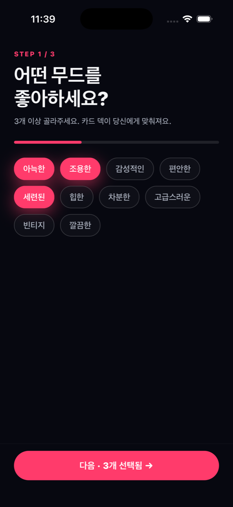
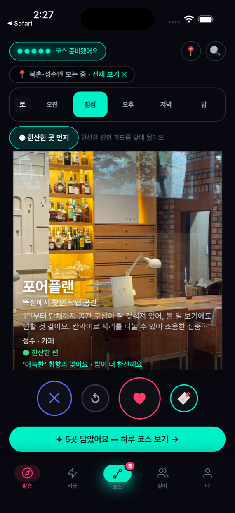
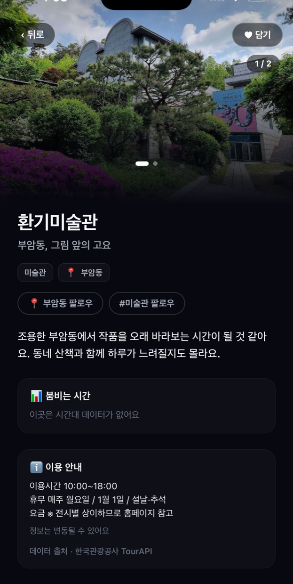
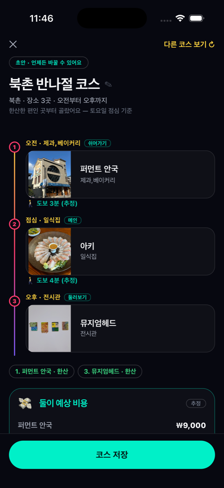

SwipeTrip
붐비는 곳 말고,
오늘 한산한 곳으로.
가고 싶은 곳을 넘겨서 고르면 하루 코스가 만들어집니다.
카드마다 지금 얼마나 붐비는지가 함께 붙고, 그 판단의 근거가 어디서 왔는지도 숨기지 않고 표시합니다.
한국관광공사와 서울시가 공개한 데이터로 만들었습니다.
2026 관광데이터 활용 공모전 출품작
지정과제 · 오버투어리즘
iOS · React Native
App Store 심사 준비 중
어떻게 쓰나요
1
언제 갈지, 어떤 기분인지 고르기
"오늘 오후" 같은 방문 시점과 기분을 먼저 고릅니다. 회원가입도 로그인도 없습니다.
2
카드를 넘기며 마음에 드는 곳 고르기
한 장씩 넘기면서 좋아요만 누르면 됩니다. 각 카드에 왜 추천됐는지 한 줄로 붙습니다.
3
고른 것들이 하루 코스가 됨
동선과 시간대를 고려해 순서를 잡아줍니다. 붐비는 시간을 피해 배치합니다.
4
친구와 같이 고르기
초대 링크를 보내면 친구는 앱을 설치하지 않고 웹에서 같이 넘길 수 있습니다.
둘 다 좋아한 곳이 바로 집계됩니다.
혼잡을 어떻게 말하나
모르는 것을 아는 척하지 않는 것이 이 앱의 규칙입니다. 근거의 세기를 세 단계로 나눠 표시합니다.
●
실측
서울시 실시간 도시데이터가 그 장소의 지금 인구를 직접 제공하는 경우.
◐
시기 예측
한국관광공사 관광지 집중률 예측치. 앞으로 몇 주간의 혼잡 추이를 예측한 값입니다.
○
동네 기준
그 장소 자체의 데이터가 없어 동네 평균으로 대신 말하는 것입니다.
장소 단위 정보가 아니라는 뜻을 표시로 그대로 드러냅니다.
화면
아래는 모두 실제 기기에서 찍은 화면입니다. 합성하거나 그린 목업이 아닙니다.

고르기 전에 묻기언제 갈지·어떤 기분인지

왜 추천됐는지카드마다 근거 한 줄

출처를 밝힘어느 공공데이터에서 왔는지

하루 코스고른 것들이 순서대로
어떤 공공데이터를 쓰나
국문 관광정보 서비스 (TourAPI)
한국관광공사
장소 이름·주소·좌표·분류·소개·대표사진. 서울 기준 8,008곳을 조회할 수 있습니다.
관광지 집중률 방문자 추이 예측
한국관광공사
이동통신 데이터 기반 혼잡 예측치. 위 혼잡 표시의 ◐ 시기 예측 근거입니다.
실시간 도시데이터 (인구)
서울열린데이터광장
주요 지점의 실시간 혼잡도. 위 혼잡 표시의 ● 실측 근거입니다.
사진 저작권 표시가 공공누리 제3유형(변경금지)인 자료는 원본 그대로만 표시합니다.
장소 상세 화면 하단에 각 정보의 출처를 표기합니다.
움직이는 화면으로 보기
넘겨서 고르기 → 하루 코스 완성까지 한 번에 담은 실행 녹화입니다.
직접 열어보기
친구와 같이 고르기(/duo/)와 코스 공유 뷰어(/s/)는
초대 링크에 담긴 코드가 있어야 열립니다. 코드 없이 주소만 여시면 안내 화면이 나옵니다 —
오류가 아니라 의도된 동작입니다. 심사용 체험 링크가 필요하시면 아래로 요청해 주세요.